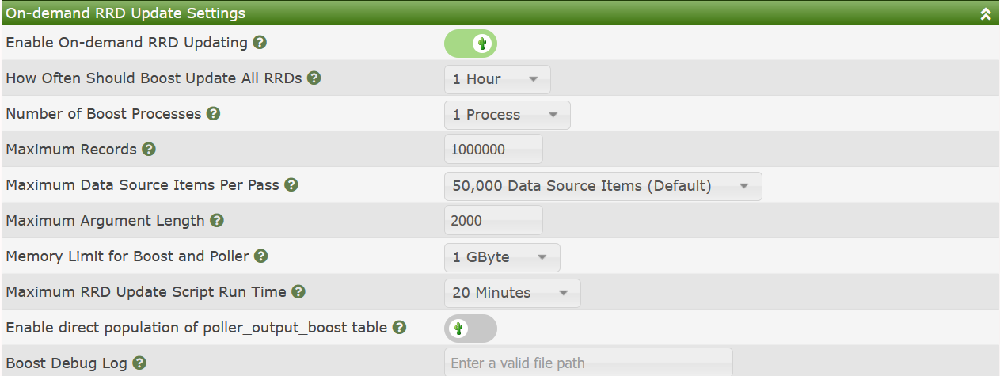
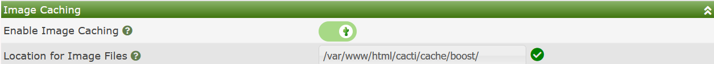

The Performance Settings sub-tab in Cacti contains settings that can help improve the life of your Cacti server and significantly increase the live and lower the I/O wait of your Cacti system through caching of RRDfile disk writes.
It will also reduce the number of CPU cores require to render Cacti Graphs due to it's image cache mechanism.
We will explain how these settings work briely in the next two sections. However, there is a more detailed guide in the Advanced Topics. Please refer to that guide as well.
These are settings to place RRDfile updates into a database table and cache them. Then, on a periodic basis dump those updates to disk at once. This will reduce the overall wear and tear of your disks, and reduce the time periods where disk I/O will be higher. You can see the available settings in the image below.

The settings include:
Enable On-demand RRD Updating - This check-box will enable on-demand updating and caching of unwritten updates. If you disable it, the poller must first clear the cache before it can be fully disabled. So, disabling is not immediate after it has been activated for some time.
How Often Should Boost Update All RRDs - As it says, what is the desired frequency of performing updates. The idea with boost is to reduce the amount of disk I/O, so if your poller frequency/interval is say 5 minutes, you may want to cache a few hours of updates.
Number of Boost Processes - For systems with shared disk where I/O performance is impacted by file system overhead or latency, the concurrent boost process setting comes in handy. Cacti will spawn the number of collectors specified by this setting.
Maximum Records - This is a threshold in cache records that if that number is exceeded, the cache will immediately begin to be cleared. This setting works together with the How Often setting.
Maximum Data Sources Items Per Pass - Cacti will count the number of distinct data sources in your system, and then divide it by this amount, and then make X number of passes through the data. If you have 1M Data Sources and 100M records in the cache, and set the setting to 100k, Cacti will make 10 passes through the Data Sources each pass processing approximately 10M cache entries.
Maximum Argument Length - This is the longest RRDtool update command to use. Most Linux systems allow for a very long command line. It's advisable to use something less than 32k though as some versions of RRDtool have problems with longer command lines.
Memory Limit for Boost and Poller - In a modern Cacti system, unless you have more than a million Data Sources the default of 1GB is likely enough.
Maximum RRD Update Script Run Time - This is the longest to allow the cache clearing script to run before notifying the primary Cacti admin. The process will be allowed to continue to run, but will issue a WARNING.
Enable direct population of poller_output_boost table - Originally a spine only setting, this setting is now supported in both spine and cmd.php. Instead of having to move records inside of the Data Collector Cacti simply makes two writes, one into the main output table and another into the boost table. Cacti has to write to the primary output table as some plugins require that data to be there immediately for fault management.
Boost Debug Log - If non-blank and points to a location that is writable, Cacti will log the RRDtool syntax used to update the RRDfiles.
The Image Caching setting on the Performance sub-tab basically defined where to store time sensitive images caches of your various Cacti Graphs. These Cached images only live for a few minutes, but can be consumed by multiple users simultaneously.
The image of the settings is shown below. They are fairly self explanatory.

Copyright (c) 2004-2024 The Cacti Group